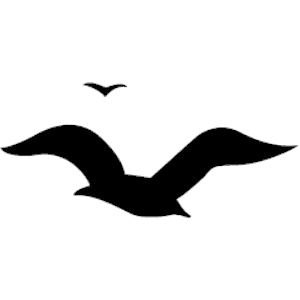

<!-- Purpose: This file is used to create a navbar for the website. -->
<nav class="navbar navbar-expand-lg">
    <div class="container-fluid">
      <a class="navbar-brand ffl-banner-nav" href="#">
        
        Fertility For Life</a>
      <button class="navbar-toggler" type="button" data-bs-toggle="collapse" data-bs-target="#navbarNavAltMarkup" aria-controls="navbarNavAltMarkup" aria-expanded="false" aria-label="Toggle navigation">
        <span class="navbar-toggler-icon"></span>
      </button>
      <div class="collapse navbar-collapse nav-items-outer-container" id="navbarNavAltMarkup">
        <div class="d-flex justify-content-center m-auto w-100">
          <div class="navbar-nav w-100 d-flex justify-content-center hamburger-squashed">
              <a class="nav-link active m-auto" href="index_final.html">Home</a>
              <a class="nav-link m-auto" href="fertility-center.html">Fertility Center</a>
              <a class="nav-link m-auto" href="docs&nurses.html">Doctors & Nurses</a>
              <a class="nav-link m-auto" href="students.html">Students</a>
              <a class="nav-link m-auto" href="research.html">Research</a>
          </div>
        </div>
        </div>
      </div>
    </div>
  </nav>